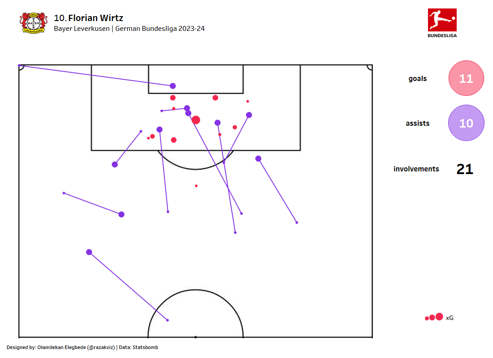

Player Goal Involvement
A dashboard representing a player's contribution to goals through both goals scored and assists — identifying preferred shooting zones, assist patterns, and overall attacking impact.

Overview
Goals and assists are the most visible metrics in football, but they rarely tell the full story. This project combines shot location data, assist origins, and xG values to build a comprehensive goal involvement profile for individual players — going beyond the raw goal tally to show the quality and location of their attacking contributions.
Dashboard Features
Shot Location Map
Goals and shots are plotted on a pitch half, colour-coded by outcome. Bubble size represents xG value — making it immediately clear whether a player is scoring from high-quality or difficult positions.
Assist Origin Map
The locations from which a player delivers key passes and assists are plotted — revealing whether they create from wide areas, central zones, or through-ball positions in behind defences.
Performance Summary
A KPI summary card shows total goals, assists, xG, expected assists (xA), and the player's actual vs. expected goal difference — quantifying finishing efficiency above or below average.
Explore the Project
View the interactive dashboard or browse the code on GitHub.